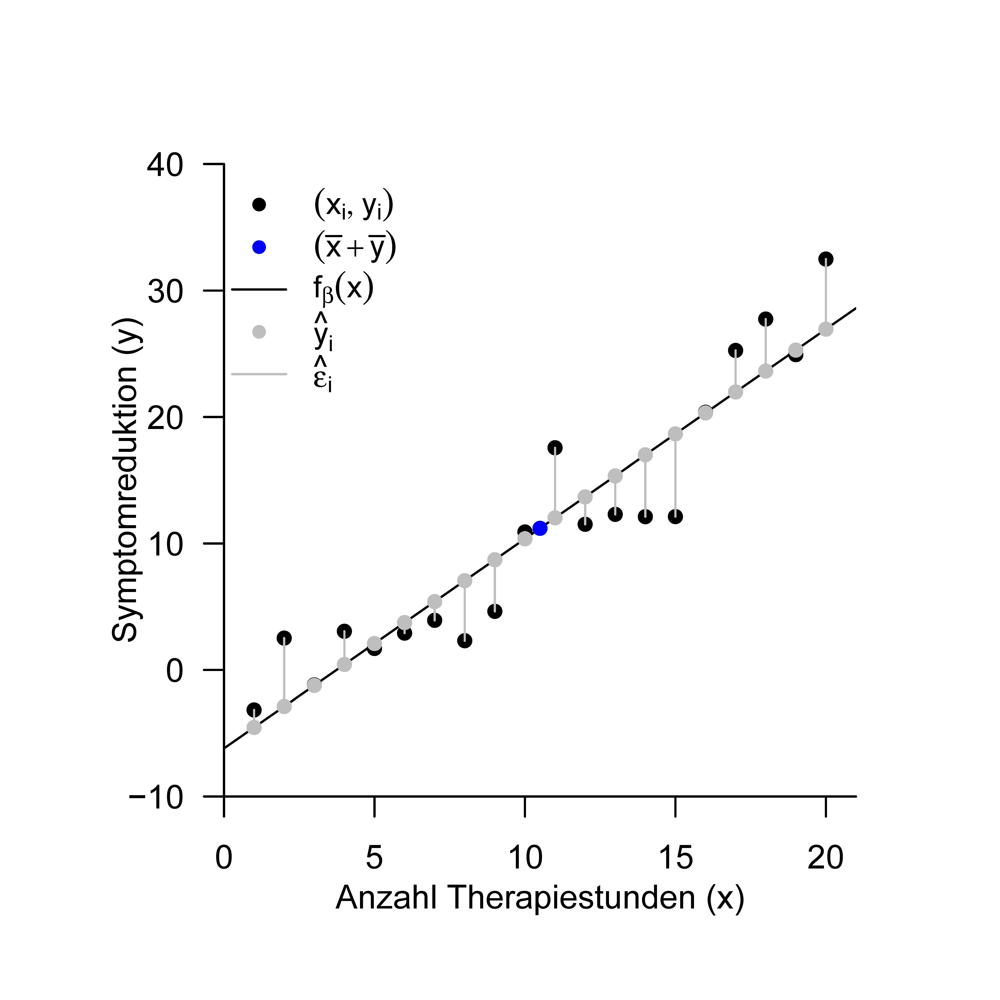

Die Konzepte der Regression und der Korrelation sind eng miteinander verwoben und dienen letztlich der Quantifizierung linear-affiner Abhängigkeiten zwischen unabhängigen und abhängigen Variablen. Ein zentrales Thema dieses Abschnittes sind damit die Äquivalenzen zwischen beiden Konzepten. Im Gegensatz zur Regression werden bei der Korrelation sowohl die abhängige als auch die unabhängige Variable als Zufallsvariablen modelliert, die probabilistische Komplexität der Korrelation ist also etwas höher als die der Regression und des Allgemeinen Linearen Modells. Um uns den Zusammenhängen von Regression und Korrelation zu nähern, erinnern wir Kapitel 26.1 zunächst an den Begriff und die Mechanik der Stichprobenkorrelation. In Kapitel Kapitel 26.2 widmen wir uns anhand der \(\mathrm{R}^2\) Statistik dem Zusammenhang zwischen Stichprobenkorrelation und Ausgleichsgerade und geben ein erstes Beispiel für die Idee einer Varianzzerlegung. In Kapitel Kapitel 26.3 schließlich diskutieren wir erste Aspekte zum Verständnis der Stichprobenkorrelation im probabilistischen Kontext. Als Anwendungsbeispiel betrachten wir durchgängig den in Kapitel 25 eingeführten Beispieldatensatz zum Zusammenhang von Psychotherapiedauer und Symptomreduktion.
26.1 Grundlagen
Wir erinnern zunächst an den Begriff der Korrelation zweier Zufallsvariablen.
Definition 26.1 (Korrelation) Die Korrelation zweier Zufallsvariablen \(\xi\) und \(\upsilon\) ist definiert als \[\begin{equation}
\rho(\xi, \upsilon):=\frac{\mathbb{C}(\xi, \upsilon)}{\mathbb{S}(\xi) \mathbb{S}(\upsilon)}
\end{equation}\] wobei \(\mathbb{C}(\xi, \upsilon)\) die Kovarianz von \(\xi\) und \(\upsilon\) und \(\mathbb{S}(\xi)\) und \(\mathbb{S}(\upsilon)\) die Standardabweichungen von \(\xi\) und \(\upsilon\), respektive, bezeichnen.
Die Zahl \(\rho(\xi, \upsilon)\) wird auch Korrelationskoeffizient von \(\xi\) und \(\upsilon\) genannt. Wir haben bereits gesehen, dass \(-1 \leq \rho(\xi, \upsilon) \leq 1\) gilt und dass \(\xi\) und \(\upsilon\) unkorreliert genannt werden, wenn \(\rho(\xi, \upsilon)=0\) ist. Weiterhin haben wir bereits gesehen, dass aus der Unabhängigkeit der Zufallsvariablen \(\xi\) und \(\upsilon\) immer die Unkorreliertheit von \(\xi\) und \(\upsilon\) folgt, dass aber im Allgemeinen aus der Unkorreliertheit von \(\xi\) und \(\upsilon\) nicht die Unabhängigkeit von \(\xi\) und \(\upsilon\) folgt.
Liegen von zwei Zufallsvariablen Realisationen als ein bivariater Datensatz vor, so kann man anhand folgender Definition die realisationsspezifische Stichprobenkorrelation bestimmen.
Definition 26.2 (Stichprobenkorrelation) \(\left\{\left(x_{1}, y_{1}\right), \ldots,\left(x_{n}, y_{n}\right)\right\} \subset \mathbb{R}^{2}\) sei ein Datensatz. Weiterhin seien:
Die Stichprobenmittel der \(x_{i}\) und \(y_{i}\) definiert als \[\begin{equation}
\bar{x}:=\frac{1}{n} \sum_{i=1}^{n} x_{i} \mbox{ und } \bar{y}:=\frac{1}{n} \sum_{i=1}^{n} y_{i}
\end{equation}\]
Die Stichprobenstandardabweichungen \(x_{i}\) und \(y_{i}\) definiert als \[\begin{equation}
s_{x}:=\sqrt{\frac{1}{n-1} \sum_{i=1}^{n}\left(x_{i}-\bar{x}\right)^{2}} \mbox{ und } s_{y}:=\sqrt{\frac{1}{n-1} \sum_{i=1}^{n}\left(y_{i}-\bar{y}\right)^{2}} .
\end{equation}\]
Die Stichprobenkovarianz der \(\left(x_{1}, y_{1}\right), \ldots,\left(x_{n}, y_{n}\right)\) definiert als \[\begin{equation}
c_{x y}:=\frac{1}{n-1} \sum_{i=1}^{n}\left(x_{i}-\bar{x}\right)\left(y_{i}-\bar{y}\right)
\end{equation}\]
Dann ist die Stichprobenkorrelation der \(\left(x_{1}, y_{1}\right), \ldots,\left(x_{n}, y_{n}\right)\) definiert als \[\begin{equation}
r_{x y}:=\frac{c_{x y}}{s_{x} s_{y}}
\end{equation}\] und wird auch Pearson’s Stichprobenkorrelationskoeffizient genannt.
Folgender R Code wertet die Stichprobenkorrelation des Beispieldatensatzes aus.
# Automatische Berechnung mit cor()r_xy =cor(x_i,y_i) # r_{xy}print(r_xy) # Ausgabe
[1] 0.9378162
Im Beispieldatensatz sind die Anzahl der Therapiestunden und die Symptomreduktion also mit \(r_{x y}=0.93\) hoch korreliert. Allgemein spricht man bei absoluten Werten von \(r_{x y}\) größer als etwa 0.70 von hoher Korrelation, bei absoluten Werten von \(r_{x y}\) zwischen etwa 0.30 und 0.70 von mittlerer Korrelation und bei absoluten Werten von \(r_{x y}\) zwischen 0.00 und 0.30 von niedriger Korrelation. Eine niedrige Korrelation zweier Variablen bedeutet aber nicht zwangsläufig, dass diese Korrelation irrelevant ist (man denke an Gesundheitsrisikofaktoren), genauso wenig wie eine hohe Korrelation zweier Variablen trivial sein kann (man denke an die Korrelation von Körpergröße und Schuhgröße).
Abbildung 26.1: Mechanik der Stichprobenkorrelationssummenterme.
Da die Stichprobenkorrelation lediglich die auf das Intervall \([-1,1]\) normalisierte Stichprobenkovarianz \(c_{x y}\) ist, wird die Höhe der Stichprobenkorrelation und insbesondere ihr Vorzeichen entscheidend durch die Werte Stichprobenkovarianzsummenterme \(\left(x_{i}-\bar{x}\right)\left(y_{i}-\bar{y}\right)\) bestimmt. Dabei ist es entscheidend, wie häufig über die Datenpaare \(\left(x_{i}, y_{i}\right)\) hinweg die \(x_{i}\) und \(y_{i}\) gleichartig oder entgegengesetzt von ihren jeweiligen Stichprobenmitteln abweichen. Dies ist schematisch in Abbildung 26.1 dargestellt. Bei häufiger richtungsgleicher Abweichung von ihren jeweiligen Mittelwerten, sowohl in positiver als auch in negativer Richtung, ergibt das Produkt \(\left(x_{i}-\bar{x}\right)\left(y_{i}-\bar{y}\right)\) eine positive Zahl, trägt also zu einer positiven Stichprobenkovarianz bei. Bei häufiger entgegengesetzter Abweichung von ihren jeweiligen Mittelwerten ergibt das Produkt \(\left(x_{i}-\bar{x}\right)\left(y_{i}-\bar{y}\right)\) häufig eine negative Zahl, trägt also zu einer negativen Stichprobenkovarianz bei. Kommen sowohl richtungsgleiche als auch entgegengesetzte Abweichungen der \(x_{i}\) und \(y_{i}\) häufig vor, so gleichen sich positive und negative Beiträge zur Stichprobenkovarianzsumme eher aus und es resultiert eine geringe Stichprobenkovarianz bzw. ein Stichprobenkorrelationskoeffizient nahe Null. Abbildung 2.2 zeigt bivariate Datensätze von jeweils \(n=30\) Datenpunkten zusammen mit ihren jeweiligen Stichprobenkorrelationskoeffizienten.
Der Vorteil des Stichprobenkorrelationskoeffizienten gegenüber der Stichprobenkovarianz als Zusammenhangsmaß ist es, dass der absolute Wert des Stichprobenkorrelationskoeffizienten bei linear-affiner Transformation der zugrundeliegende Wertemenge gleich bleibt, wohingegen die Stichprobenkovarianz ihren Wert je nach gewähltem Maßstab ändert. Man sagt deshalb auch, dass der Stichprobenkorrelationkoeffizient maßstabsunabhängig ist. Dies ist die zentrale Aussage folgenden Theorems.
Theorem 26.1 (Stichprobenkorrelation bei linear affiner Transformation) Für einen Datensatz \(\left\{\left(x_{i}, y_{i}\right)\right\}_{i=1, \ldots n} \subset \mathbb{R}^{2}\) sei \(\left\{\left(\tilde{x}_{i}, \tilde{y}_{i}\right)\right\}_{i=1, \ldots n} \subset \mathbb{R}^{2}\) der linear-affin transformierte Datensatz mit \[\begin{equation}
\left(\tilde{x}_{i}, \tilde{y}_{i}\right)=\left(a_{x} x_{i}+b_{x}, a_{y} y_{i}+b_{y}\right), a_{x}, a_{y} \neq 0 .
\end{equation}\] gegeben. Dann gilt \[\begin{equation}
\left|r_{\tilde{x} \tilde{y}}\right|=\left|r_{x y}\right| .
\end{equation}\]
Abbildung 26.2: Beispiele bivariater Datensätze und ihrer Stichprobenkorrelationen.
Das sogenannte Bestimmtheitsmaß \(\mathrm{R}^{2}\) ist eine beliebte, häufig reportierte Statistik zur Beschreibung der Zusammenhangsstärke der Werte einer unabhängigen und einer abhängigen Variable. Numerisch handelt es sich bei \(\mathrm{R}^{2}\) lediglich um den quadrierten Stichprobenkorrelationskoeffizienten. Ist die seStichprobenkorrelation zum Beispiel \(r_{x y}=0.5\), dann ist \(\mathrm{R}^{2}=0.5^{2}=0.25\), ist die Stichprobenkorrelation dagegen \(r_{x y}=-0.5\), dann gilt analog \(\mathrm{R}^{2}=(-0.5)^{2}=0.25\). An diesen Beispielen erkennt man, dass \(\mathrm{R}^{2}\) weniger Information über die Rohdaten enthält als \(r_{x y}\), da das Vorzeichen und damit die Richtung des Zusammenhangs wegfällt. Per se ist die Angabe von \(\mathrm{R}^{2}\) anstelle von \(r_{x y}\) als Deskriptivstatistik zur Beschreibung der Zusammenhangsstärke der Werte von unabhängiger und abhängiger Variable ohne Vorteil. Wir wollen hier trotzdem etwas genauer auf \(\mathrm{R}^{2}\) eingehen, da ein tieferes Verständnis von \(\mathrm{R}^{2}\) einerseits den Einstieg in das Konzept der Varianzzerlegungen erlaubt und andererseits die Zusammenhänge zwischen den Konzepten der Ausgleichsgerade und der Stichprobenkorrelation weiter verdeutlicht. Wir erweitern dazu zunächst die Beschreibung der Ausgleichsgerade aus Kapitel 25.1 durch die Begriffe der erklärten Werte und der Residuen.
Definition 26.3 (Erklärte Werte und Residuen einer Ausgleichsgerade.) Gegeben sei ein Datensatz \(\left\{\left(x_{1}, y_{1}\right), \ldots,\left(x_{n}, y_{n}\right)\right\} \subset \mathbb{R}^{2}\) und die zu diesem Datensatz gehörende Ausgleichsgerade \[\begin{equation}
f_{\hat{\beta}}: \mathbb{R} \rightarrow \mathbb{R}, x \mapsto f_{\hat{\beta}}(x):=\hat{\beta}_{0}+\hat{\beta}_{1} x
\end{equation}\] Dann werden für \(i=1, \ldots, n\)\[\begin{equation}
\widehat{y}_{i}:=\hat{\beta}_{0}+\hat{\beta}_{1} x_{i}
\end{equation}\] die durch die Ausgleichsgerade erklärten Werte genannt und \[\begin{equation}
\hat{\varepsilon}_{i}:=y_{i}-\hat{y}_{i}
\end{equation}\] werden die Residuen der Ausgleichsgerade genannt.
Etwas allgemeiner formuliert sind die erklärten Werte damit die Datenvorhersage des Modells basierend auf den geschätzten Parameterwerten, während die Residuen die Differenzen zwischen den geschätzten Datenvorhersagen und den beobachteten Datenwerten bezeichnen. Abbildung 26.3 verdeutlicht diese Begriffe am Beispiel der Ausgleichsgerade des Beispieldatensatzes.

Abbildung 26.3: Ausgleichsgerade, erklärte Werte und Residuen für den Beispieldatensatz..
Mithilfe der Begriffe der erklärten Werte und Residuen lässt sich nun folgende Quadratsummenzerlegung beim Vorliegen einer Ausgleichsgerade eines Datensatzes angeben.
Theorem 26.2 (Quadratsummenzerlegung bei Ausgleichsgerade) Für einen Datensatz \(\left\{\left(x_{1}, y_{1}\right), \ldots,\left(x_{n}, y_{n}\right)\right\} \subset \mathbb{R}^{2}\) und seine zugehörige Ausgleichsgerade \(f_{\hat{\beta}}\) seien für \[\begin{equation}
\bar{y}:=\frac{1}{n} \sum_{i=1}^{n} y_{i} \mbox{ und } \hat{y}_{i}:=\hat{\beta}_{0}+\hat{\beta}_{1} x_{i} \text {, für } i=1, \ldots, n
\end{equation}\] das Stichprobenmittel der \(y_{i}\)-Werte und die durch die Ausgleichsgerade erklärten Werte, respektive. Weiterhin seien
die Total Sum of Squares definiert als \[\begin{equation}
\mbox{SQT} := \sum_{i=1}^{n}\left(y_{i}-\bar{y}\right)^{2}
\end{equation}\]
die Explained Sum of Squares definiert als \[\begin{equation}
\mbox{SQE} := \sum_{i=1}^{n}\left(\widehat{y}_{i}-\bar{y}\right)^{2}
\end{equation}\]
die Residual Sum of Squares definiert als \[\begin{equation}
\mbox{SQR} := \sum_{i=1}^{n}\left(y_{i}-\hat{y}_{i}\right)^{2}
\end{equation}\]
Dann gilt \[\begin{equation}
\mbox{SQT} = \mbox{SQE} + \mbox{SQR}
\end{equation}\]
Die Begriffsbildungen von Theorem 26.2 erklären sich intuitiv wie folgt:
SQT repräsentiert die Gesamtvariabilität der \(y_{i}\)-Werte um ihren Mittelwert \(\bar{y}\).
SQE repräsentiert die Variabilität der erklärten Werte \(\hat{y}_{i}\) um ihren Mittelwert. Große Werte von SQE repräsentieren damit eine große absolute Steigung der \(y_{i}\) mit den \(x_{i}\) und kleine Werte von SQE repräsentieren eine kleine absolute Steigung der \(y_{i}\) mit den \(x_{i}\). SQE ist somit ein Maß für die Stärke des linearen Zusammenhangs der \(x_{i^{-}}\) und \(y_{i}\)-Werte
SQR ist die Summe der quadrierten Residuen, denn es gilt \[\begin{equation}
\mathrm{SQR}:=\sum_{i=1}^{n}\left(y_{i}-\hat{y}_{i}\right)^{2}:=\sum_{i=1}^{n} \hat{\varepsilon}_{i}^{2}
\end{equation}\]
Große Werte von SQR repräsentieren damit große Abweichungen der erklärten von den beobachteten \(y_{i}\)-Werten und kleine Werte von SQR repräsentieren geringe Abweichungen der erklärten von den beobachteten \(y_{i}\)-Werten. SQR ist also ein Maß für die Güte der Beschreibung der Datenmenge durch die Ausgleichsgerade.
Die zentrale Aussage des Theorem 2.1 ist nun, dass sich die Gesamtstreung der \(y_{i}\)-Werte um ihren Mittelwert \(\bar{y}\) gerade aus der Summe der Stärke des linearen Zusammenhangs der \(x_{i^{-}}\)und \(y_{i}\)-Werte (also des “deterministischen Einflusses” der \(x_{i}\) auf die \(y_{i}\) ) sowie den den Abweichungen von diesem linearen Zusammenhang (also dem “Rauschen”) zusammensetzt. Obwohl es sich bei SQT formal nicht um ein Varianzmaß handelt, spricht man in diesem Zusammenhang auch oft von einer Varianzzerlegung in erklärte Varianz und Residualvarianz. Dieses Motiv ist ein zentraler Aspekt des Allgemeinen Linearen Modells und wird in späteren Kapiteln erneut aufgegriffen werden. Für den Moment erlaubt Theorem 2.1 nun folgende Defintion des Bestimmtheitsmaßes \(\mathrm{R}^{2}\).
Definition 26.4 (Bestimmtheitsmaß \(\mathrm{R}^{2}\)) Für einen Datensatz \(\left\{\left(x_{1}, y_{1}\right), \ldots,\left(x_{n}, y_{n}\right)\right\} \subset \mathbb{R}^{2}\) und seine zugehörige Ausgleichsgerade \(f_{\hat{\beta}}\) sowie die zugehörigen Explained Sum of Squares SQE und Total Sum of Squares SQT heißt \[\begin{equation}
\mathrm{R}^{2}:=\frac{\mathrm{SQE}}{\mathrm{SQT}}
\end{equation}\] das Bestimmtheitsmaß oder der Determinationskoeffizient.
Folgendes Theorem liefert nun den oben erwähnten Zusammenhang zwischen dem Bestimmtheitsmaß und der Stichprobenkorrelation.
Theorem 26.3 (Stichprobenkorrelation und Bestimmtheitsmaß) Für einen Datensatz \(\left\{\left(x_{1}, y_{1}\right), \ldots,\left(x_{n}, y_{n}\right)\right\} \subset \mathbb{R}^{2}\) sei \(\mathrm{R}^{2}\) das Bestimmtheitsmaß und \(r_{x y}\) sei die Stichprobenkorrelation. Dann gilt \[\begin{equation}
\mathrm{R}^{2} = r_{x y}^{2}
\end{equation}\]
Man beachte, dass mit \(-1 \leq r_{x y} \leq 1\) aus Theorem 26.3 direkt folgt, dass \(0 \leq \mathrm{R}^{2} \leq 1\). Nach Definition 26.4 gilt \(\mathrm{R}^{2}=0\) genau dann, wenn \(\mathrm{SQE}=0\) ist. \(\mathrm{R}^{2}=0\) bedeutet also, dass die erklärte Datenvariabilität durch die Ausgleichsgerade gleich Null ist und beschreibt damit den Fall einer denkbar schlechten Datenerklärung durch die Ausgleichsgerade. Andererseits gilt \(\mathrm{R}^{2}=1\) genau dann, wenn \(\mathrm{SQE}=\mathrm{SQT}\) ist. \(\mathrm{R}^{2}=1\) bedeutet also, dass die Gesamtstreuung gleich der durch die Ausgleichsgerade erklärten Streuung ist und beschreibt den Fall, dass sämtliche Datenvariabilität durch die Ausgleichsgerade erklärt werden kann. Man sagt deshalb auch oft etwas ungenau, dass \(\mathrm{R}^{2}\) die durch die Ausgleichsgerade erklärte Varianz an der Gesamtvarianz der Daten repräsentiert. Neben der jeweiligen Stichprobenkorrelation ist in Abbildung 26.2 auch jeweils das Bestimmtheitsmaß für die bivariaten Beispieldatensätze aufgeführt.
26.3 Korrelation und linear-affine Abhängigkeit
Die Tatsache, dass stochastische Unabhängigkeit zwar Unkorreliertheit impliziert, dass umgekehrt die Unkorreliertheit zweier Zufallsvariablen aber nicht ihre stochatische Unabhängigkeit impliziert, deutet daraufhin, dass die Korrelation zweier Zufallsvariablen nur bestimmte Formen der Abhängigkeit zwischen Variablen misst. Abbildung 2.4 verdeutlicht dies anhand dreier Simulationsbeispiele.
Abbildung 26.4: Korrelation und Abhängigkeit.
Abbildung 26.4 A zeigt eine Realisation des Modells \[\begin{equation}
\upsilon_i=x_{i}+\varepsilon_{i} \mbox{ mit } \varepsilon_{i} \sim N(0,1) \mbox{ für } i=1,...,n.
\end{equation}\] Die Stichprobenkorrelationen des Datensatzes \(\left\{\left(x_{i}, y_{i}\right)\right\}_{i=1}^{n}\) ergibt sich hier zu \(r_{x y}=0.90\). Es besteht eine klare Abhängigkeit des Wertes der \(\upsilon_i\) Realisation \(y_{i}\) vom Wert \(x_{i}\): je höher der Wert von \(x_{i}\), desto höher der Erwartungswert für den Wert von \(\upsilon_i\). Abbildung 26.4 B zeigt eine Realisation des Modells \[\begin{equation}
\upsilon_i=x_{i}^{2}+\varepsilon_{i} \mbox{ mit } \varepsilon_{i} \sim N(0,1) \mbox{ für } i=1,...,n.
\end{equation}\] Die Stichprobenkorrelationen des Datensatzes \(\left\{\left(x_{i}, y_{i}\right)\right\}_{i=1}^{n}\) ergibt sich hier zu \(r_{x y} = -0.01\). Die Stichprobenkorrelation ist also minimal. Es besteht aber auch hier eine klare Abhängigkeit des Wertes der \(\upsilon_i\) Realisation \(y_{i}\) vom Wert \(x_{i}\) : je höher oder je niedriger der Wert von \(x_{i}\), desto höher der Erwartungswert für den Wert von \(\upsilon_i\), es besteht ein quadratischer Zusammenhang. Ein ähnliches Bild ergibt sich beim Betrachten von Abbildung 26.4 C einer Realisation des Modells \[\begin{equation}
\upsilon_i
= 8 \cos \left(2 x_{i}\right)+\varepsilon_{i} \mbox{ mit } \varepsilon_{i} \sim N(0,1) \mbox{ für } i=1,...,n.
\end{equation}\] Auch hier ergibt sich das Bild einer Abhängigkeit des Wertes der \(\upsilon_i\) Realisation \(y_{i}\) vom Wert \(x_{i}\), in diesem Fall im Sinne einer zyklischen Abhängigkeit, die Stichprobenkorrelation ist aber mit \(r_{x y}=-0.01\) wiederum minimal. Diese Simulationsbeispiele belegen also intuitiv, dass die Stichprobenkorrelation verschwindend gering sein kann, auch wenn klare Abhängigkeiten zwischen zwei Variablen bestehen. Als allgemeines Maß für die Abhängigkeit zweier Variablen ist die Korrelation also ungeeignet. Diesen Umstand zugrunde liegt die Tatsache, dass die Korrelation lediglich ein Maß für den linear-affinen Zusammenhang zweier Zufallsvariablen, nicht aber für ihre stochastische Abhängigkeit ist. Wir formalisieren und präzisieren diese Aussage in folgenden Theorem.
Theorem 26.4 (Korrelation und linear-affine Abhängigkeit) \(\xi\) und \(\upsilon\) seien zwei Zufallsvariablen mit positiver Varianz. Dann besteht genau dann eine lineare-affine Abhängigkeit der Form \[\begin{equation}
\upsilon=\beta_{0}+\beta_{1} \xi \mbox{ mit } \beta_{0}, \beta_{1} \in \mathbb{R}
\end{equation}\] zwischen \(\xi\) und \(\upsilon\), wenn \[\begin{equation}
\rho(\xi, \upsilon)=1 \mbox{ oder } \rho(\xi, \upsilon)=-1
\end{equation}\] gilt.
Beweis. Wir beschränken uns auf den Beweis der Aussage, dass aus \(\upsilon=\beta_{0}+\beta_{1} \xi\) folgt, dass \(\rho(\xi, \upsilon)= \pm 1\) ist. Dazu halten wir zunächst fest, dass mit den Theoremen zu den Eigenschaften von Erwartungswert und Varianz gilt, dass \[\begin{equation}
\mathbb{E}(\upsilon) = \beta_{0}+\beta_{1} \mathbb{E}(\xi)
\mbox{ und }
\mathbb{V}(\upsilon) = \beta_{1}^{2} \mathbb{V}(\xi)
\end{equation}\] Wegen \(\mathbb{V}(\xi)>0\) und \(\mathbb{V}(\upsilon)>0\) gilt damit \(\beta_{1} \neq 0\). Es folgt dann \[\begin{equation}
\beta_{1} > 0
\Rightarrow
\mathbb{S}(\upsilon)=\beta_{1} \mathbb{S}(\xi) > 0
\mbox{ und }
\beta_{1} < 0
\Rightarrow
\mathbb{S}(\upsilon) = -\beta_{1} \mathbb{S}(\xi) > 0.
\end{equation}\] Weiterhin gilt \[\begin{equation}
\begin{aligned}
\upsilon -\mathbb{E}(\upsilon)
& = \beta_{0}+\beta_{1} \xi-\mathbb{E}(\upsilon) \\
& = \beta_{0}+\beta_{1} \xi-\beta_{0}-\beta_{1} \mathbb{E}(\xi) \\
& = \beta_{1} \xi-\beta_{1} \mathbb{E}(\xi) \\
& = \beta_{1}(\xi-\mathbb{E}(\xi)) .
\end{aligned}
\end{equation}\] Für die Kovarianz von \(\xi\) und \(\upsilon\) ergibt sich also \[\begin{equation}
\begin{aligned}
\mathbb{C}(\xi,\upsilon)
& = \mathbb{E}((\upsilon-\mathbb{E}(\upsilon))(\xi-\mathbb{E}(\xi))) \\
& = \mathbb{E}\left(\beta_{1}(\xi-\mathbb{E}(\xi))(\xi-\mathbb{E}(\xi))\right) \\
& = \beta_{1} \mathbb{E}\left((\xi-\mathbb{E}(\xi))^{2}\right) \\
& = \beta_{1} \mathbb{V}(\xi) .
\end{aligned}
\end{equation}\] Damit ergibt für die Korrelation von \(\xi\) und \(\upsilon\)\[\begin{equation}
\rho(\xi, \upsilon)
= \frac{\mathbb{C}(\xi,\upsilon)}{\mathbb{S}(\xi) \mathbb{S}(\upsilon)}
= \pm \frac{\beta_{1} \mathbb{V}(\xi)}{\mathbb{S}(\xi) \beta_{1} \mathbb{S}(\xi)}
= \pm \frac{\beta_{1} \mathbb{V}(\xi)}{\beta_{1} \mathbb{V}(\xi)}
= \pm 1
\end{equation}\]
Die Korrelation zweier Zufallsvariablen wird also genau dann maximal, wenn zwischen den beiden Zufallsvariablen ein linear-affiner Zusammenhang besteht. Dabei impliziert die linear-affine Abhängigkeit von \(\upsilon\) von \(\xi\) auch immer die linear-affine Abhängigkeit von \(\xi\) von \(\upsilon\), denn \[\begin{equation}
\upsilon = \beta_{0} + \beta_{1} \xi
\Leftrightarrow
-\beta_{0} + \upsilon = \beta_{1} \xi
\Leftrightarrow
\xi = -\frac{\beta_{0}}{\beta_{1}}+\frac{1}{\beta_{1}} \upsilon
\Leftrightarrow
\xi = \tilde{\beta}_{0}+\tilde{\beta}_{1} \upsilon
\end{equation}\] mit \[\begin{equation}
\tilde{\beta}_{0} = -\frac{\beta_{0}}{\beta_{1}} \mbox{ und } \tilde{\beta}_{1} = \frac{1}{\beta_{1}}.
\end{equation}\]
26.4 Literaturhinweise
Der Begriff der Korrelation erscheint, allerdings basierend auf früheren Arbeiten zum Beispiel von Bravais (1844), zunächst bei Galton (1890) (vgl. Stigler (1986)) und wird unter anderem durch die Arbeiten von Pearson (1895), Pearson (1896), Pearson (1900), Pearson (1901) im Kontext multivariater Normalverteilungen weiter ausgearbeitet. Eine frühe Studie zum Verhältnis von Korrelation und Kausalität ist Wright (1921).
26.5 Selbstkontrollfragen
Geben Sie die Definition der Korrelation zweier Zufallsvariablen wieder.
Geben Sie die Definitionen von Stichprobenmittel, Stichprobenstandardabweichung, Stichprobenkovarianz und Stichprobenkorrelation wieder.
Erläutern Sie anhand der Mechanik der Kovariationsterme, wann eine Stichprobenkorrelation einen hohen absoluten Wert annimmt, einen hohen positiven Wert annimmt, einen hohen negativen Wert annimmt und einen niedrigen Wert annimmt.
Geben Sie das Theorem zur Stichprobenkorrelation bei linear-affinen Transformationen wieder.
Erläutern Sie das Theorem zur Stichprobenkorrelation bei linear-affinen Transformationen.
Geben Sie die Definitionen von erklärten Werten und Residuen einer Ausgleichsgerade wieder.
Geben Sie das Theorem zur Quadratsummenzerlegung bei einer Ausgleichsgerade wieder.
Erläutern Sie die intuitiven Bedeutungen von SQT, SQE und SQR.
Geben Sie die Definition des Bestimmtheitsmaßes \(\mathrm{R}^{2}\) wieder.
Geben Sie das Theorem zum Zusammenhang von Stichprobenkorrelation und Bestimmtheitsmaß wieder.
Erläutern Sie die Bedeutung von hohen und niedrigen \(\mathrm{R}^{2}\) Werten im Lichte der Ausgleichsgerade.
Geben Sie das Theorem zum Zusammenhang von Korrelation und linear-affiner Abhängigkeit wieder.
Bravais, A. (1844). Analyse Mathématique : Sur Les Probabilités Des Erreurs de Situation d’un Point.
Pearson, K. (1895). Note on Regression and Inheritance in the Case of Two Parents. Proceedings of the Royal Society of London, 5, 240–242. https://www.jstor.org/stable/115794
Pearson, K. (1896). Mathematical Contributions to the Theory of Evolution. III. Regression, Heredity, and Panmixia. Philosophical Transactions of the Royal Society of London. Series A, Containing Papers of a Mathematical or Physical Character, 18, 253–318. https://www.jstor.org/stable/90707
Pearson, K. (1900). On the Criterion That a given System of Deviations from the Probable in the Case of a Correlated System of Variables Is Such That It Can Be Reasonably Supposed to Have Arisen from Random Sampling. The London, Edinburgh, and Dublin Philosophical Magazine and Journal of Science, 50(302), 157–175. https://doi.org/10.1080/14786440009463897
Pearson, K. (1901). On Lines and Planes of Closest Fit to Systems of Points in Space. The London, Edinburgh, and Dublin Philosophical Magazine and Journal of Science, 2(11), 559–572. https://doi.org/10.1080/14786440109462720
Stigler, S. M. (1986). The History of Statistics: The Measurement of Uncertainty before 1900. Belknap Press of Harvard University Press.
Wright, S. (1921). Correlation and Causation. Journal of Agriculture Research, 20(7), 557–585.